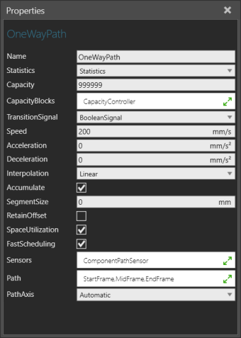
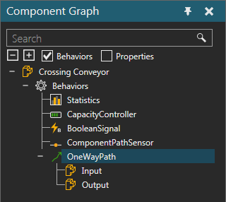

A One Way Path allows you to contain and move components forward along a path defined by Frame features.

The ports of a One Way Path are listed with the behavior in the Component Graph panel.

| Name | Description |
| Name | Defines the name of the path. |
| Statistics | Defines a Statistics behavior that collects statistics generated by the path. |
| Capacity | Defines the amount of components the path can contain at any given time. |
| CapacityBlocks | Defines a list of Capacity Controller behaviors for globally defining the path's capacity. Generally, a Capacity Controller is used as a variable for controlling the capacity of one or more containers in order to avoid deadlock situations. |
| TransitionSignal | Defines a Boolean Signal behavior that signals the arrival and departure of components to and from the path. A True value signals the arrival of a component. A False value signals the departure of a component. |
| Speed | Defines the speed at which components move along the path. In order to allow components to overtake one another, you need to override the path's Speed using a Python Script. |
| Acceleration | Defines the maximum acceleration for moving components along the path. A value of zero disables the path's Acceleration. |
| Deceleration | Defines the maximum deceleration for moving components along the path. A value of zero disables the path's Deceleration. |
| Interpolation | Defines a mode for controlling how the path acts when moving
components.
Step Linear Cubic |
| Accumulate | Defines if the path is disabled when a component is blocked from leaving. A True value stops the path. A False value will not stop the path. |
| SegmentSize | Defines the length and use of the path's segments. For example, if the linear distance of the path is 1000 {mm}, a SegmentSize of 100 would form 10 segments and limit the movement of components to and from each segment. That is, one component per segment. A value of zero disables the use of segments. |
| RetainOffset | Turns on/off the ability of a component to retain its position upon entering the path. For example, a batch of components placed randomly along the width of a conveyor belt can maintain their distribution instead of snapping to the line of the path. |
| SpaceUtilization | Turns on/off the overlapping of components on the path. A True
value means components can border one another but not overtake
each other in the same path segment. A Fale value means components
can be placed side-by-side one another and overlap.
The indexing of components on the path is not affected by SpaceUtilization. So a False value does not mean components will overtake one another in a list. You can use a Python Script to manipulate indexing for buffering, stacking, routing and so forth. |
| FastScheduling | Turns on/off the optimization of moving components on the path. If True, the path limits the amount of generated events, thereby improving simulation performance. If False, the path moves components at shorter increments, thereby increasing the amount of events and decreasing simulation performance. Note: You need to enable this option manually in components made with older product versions. |
| Sensors | Defines a list of behaviors connected to the path and used for detecting components on the path. Each behavior must be a type of sensor and define its location relative to the path, for example the sensor's distance along the path or at one of the path's Frame features. |
| Path | Defines an ordered list of Frame features in the path's component that act as the path's waypoints. The sequence of frames is important at defining the beginning and end of the path. |
| PathAxis | Defines the orientation of the path's waypoints in relation
to a calculated axis.
Automatic X-Positive Y-Positive Z-Positive X-Negative Y-Negative Z-Negative Generic |